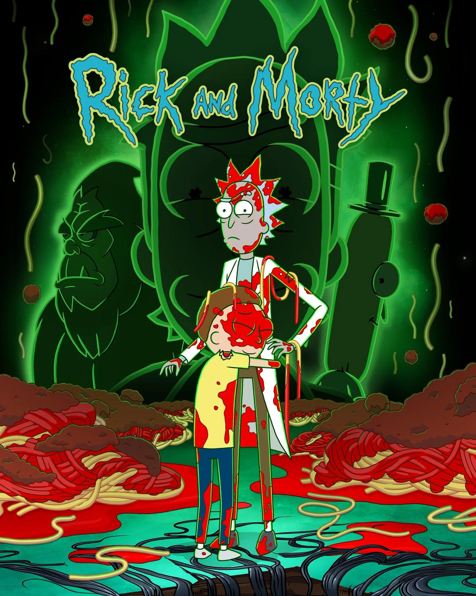

Series
Catálogo de series disponibles.
-

Rick and MortyRick and Morty
Un científico medio loco y su nieto brincando entre dimensiones. Humor negro, ciencia ficción y, cuando menos lo esperas, te pega en el corazón.
Ver capítulos -
Peacemaker
Peacemaker
Un tipo que quiere la paz aunque tenga que tumbar a medio mundo para conseguirla. Acción, chistes pesados y una intro que no se te olvida.
Ver capítulos